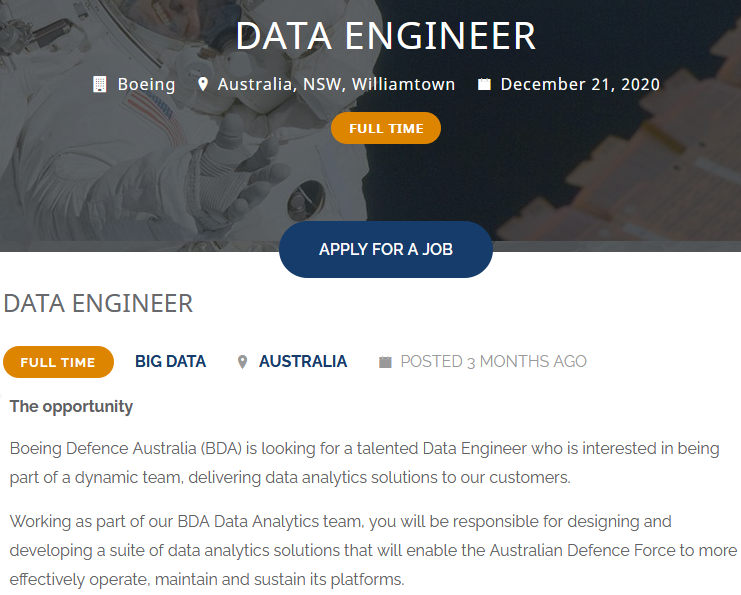
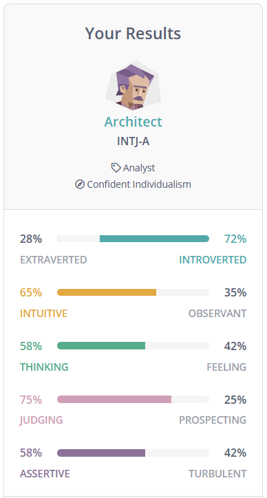
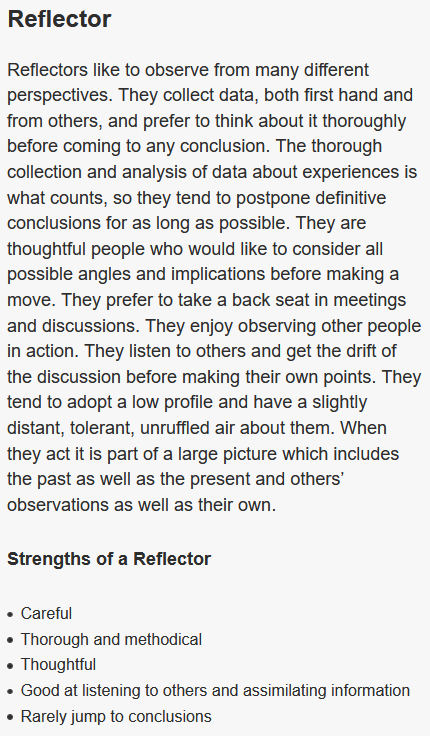
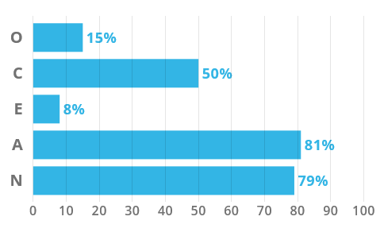
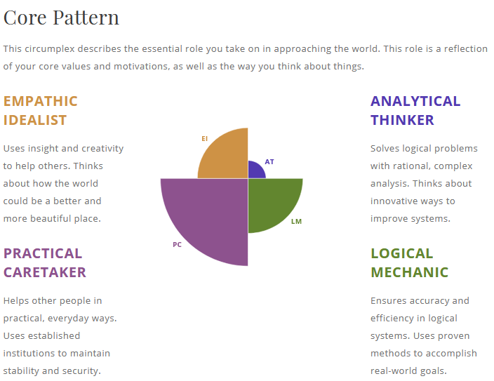

Personal Profile
Nationality: Australian
Background: Italian, Yugoslavian, French, English
Job: Bar Attendant at Heidelberg Golf Club
Hobbies: Gym, Reading, CFA Volunteer
Favourite Sport: Sailing
Favourite Movie: Master and Commander: The Far Side of the World
Pets: Bramble the Border Collie
Education
Wodonga Senior Secondary College: Victorian Certificate of Education - 2009
Royal Australian Naval College: Royal Australian Navy Officer Training - 2010
Australian Maritime College: Diploma of Nautical Science - 2011
Interest in IT
I have high school friends who started me down the path of IT. Several of them were huge gamers and had a lot of knowledge of how computers worked, even at a young age. Growing up around them, I learned bits and pieces along the way and my interest grew. I still consider myself a total amateur compared to some of them, but I have learned enough over the years to become the unofficial 'IT Guy' of my family. I also ran a solo IT business for a while, helping people in my town with basic IT issues such as viruses, slow PCs, internet issues and dodgy printers. I still dislike printers to this day.
I chose RMIT for three primary reasons. I wanted to study a Bachelor of Information Technology, I wanted to study 100% online and I wanted to study with a reputable university. Choosing RMIT (via Open Universities Australia) ticked all these boxes
During my studies I expect to learn about a variety of IT areas, which will help me decide where I want to take my career. I'm particularly interested in learning more about networking and security because, like most other people, I use networks every day but my knowledge of how they work is lacking.
Ideal Job
[1]
The position of Data Engineer for Boeing Defence Australia involves working with the Australian Defence Force to design, develop and support data analytics solutions for various platforms related to defence. This position appeals to me because it would involve working in an exciting, cutting-edge industry that would constantly challenge my IT knowledge.
The company seeks applicants with a relevant tertiary degree, as well as 5+ years of experience in data engineering, data migration and/or application development. Being a first year university student, I lack all of the stated skills. However, completing a relevant tertiary degree is the first step in the process towards employment.
My first step towards obtaining the relevant skills required to find work in this industry (or similar industries) is to complete my Bachelor of Information Technology at RMIT. Following graduation, I may have to find an entry-level job to build up relevant experience or, alternatively, pursue further study in a more specialised field.
Personal Profile
Myers-Briggs Test Results[2]

Learning Style Test Results[3]

Big Five Personality Test Results[4]

Openness, Conscientiousness, Extraversion, Agreeableness, Neuroticism

Comments
I was not particularly surprised by my test results. I have always considered myself to be introverted, logical, analytical and practical and these tests seemed to reinforce that belief. I had never taken a personality test before, so it was enlightening to read all the extra information on the website.
In a team environment, I am usually happy to take a backseat, listening quietly, taking in all information and offering input when I consider it beneficial. Rather than immediately seeking out a leadership role, I will take on such a role only if I see that it is necessary. I prefer not to rush things and to ensure that each person in the team has a clear and defined role.
Project Idea
OVERVIEW
My project idea is for a combined budgeting/investing app/website. A major hurdle for many people looking to budget, save and/or invest is a lack of knowledge or indecision on how and where to get started. The app/website will aim to make it as easy as possible for people to budget, save and get into investing regardless of prior experience. It will educate and motivate the user on their way to setting and achieving short, medium and/or long-term financial goals.
MOTIVATION
I got interested in investing in the last 12 months or so. One primary frustration I have discovered is the lack of a central app/website that allows me access to budgeting, investing and educational sources. At time of writing, I have over a dozen apps installed on my phone in order for me to manage my money, budget, invest, track and educate myself. This 'all over the place' set-up works, but is far from practical. If as much of this as possible could be condensed into one app, things would be a lot easier.
DESCRIPTION
The app will talk the user through steps, making things as easy as possible to get started on the journey of budgeting, saving and investing. Education will be a large, albeit optional, focus of the app, giving users the option of a 'set and forget' or a more manually managed experience of budgeting and investing.
The app/website will start by giving the user the option of linking certain information from their bank or entering it manually, allowing the app to track their income and expenditures. Expenditures will be categorised, allowing the user to see an overview of where their expenses primarily fall (eg. Food, transport, home, personal, etc.) and identify opportunities to save more. The user will then be able to set and track their saving goals, whether weekly, monthly or annually. However, saving money is only the first step. Without proper investment, money saved falls victim to inflation over the long-term, especially considering the low interest rates offered by savings accounts these days.
Once the user has input the relevant information, the app will make recommendations on investment options based on a variety of factors such as the user's age, desired investment timeframe, acceptable risk levels, financial knowledge etc, with the goal of reaching the financial goals of the user within a defined period of time. Included will be various investment/budgeting calculators, allowing the user to play around with different amounts invested, returns and growth over time. Visuals will be a vital part of the app, rather than walls of text and/or numbers.
The app will include access to educational material, granting the user access to as much knowledge as they desire. This could include book or website recommendations, quizzes, educational games, videos and more.
Users will be encouraged to meet or even beat their savings and investment goals, with past statistics being tracked and compared to more recent performance.
TOOLS AND TECHNOLOGIES
At my current skill level, I am unsure what exact tools will be required to develop this project. However, in order to get started, an app will need to be developed, maintained and distributed. A website will need to be developed, maintained and hosted with the relevant hardware to keep it up and operational. Various APIs will likely be needed, including banks and brokers. Privacy and security will need to be a major consideration, given the financial-nature of the service.
SKILLS REQUIRED
The primary skills required will be in app and website development. However, to get the project going, significant expertise will be required in financial, legal and security areas. Given the sensitivity of personal financial information, meeting legal and security-related laws will be a major challenge.
OUTCOME
The primary aim of this project is to make budgeting, saving and investing as easy and accessible as possible for anyone capable of accessing a website or phone app, regardless of age, income or location. The primary successful outcome would be to have more people getting involved in saving and investing all over the world.
The original problem which I faced, that of having a dozen different apps to track my budgeting, saving and investing, will be largely solved, making it easier for users to get started.
References
[1] CareersIn.Space. 2021. Data Engineer - Boeing. [online] Available at: https://www.careersin.space/job/boeing-australia-data-engineer/ [Accessed 10 March 2021].
[2] 16personalities.com. 2021. 16 Personalities: Free Personality Test. [online] Available at: https://www.16personalities.com/ [Accessed 15 March 2021].
[3] Oxford Learning College. 2021. Learning Type Quiz - Oxford Learning College. [online] Available at: https://www.oxfordcollege.ac/learning-type-quiz/ [Accessed 15 March 2021].
[4]: Truity. 2021. The Big Five Personality Test. [online] Available at: https://www.truity.com/test/big-five-personality-test [Accessed 15 March 2021].